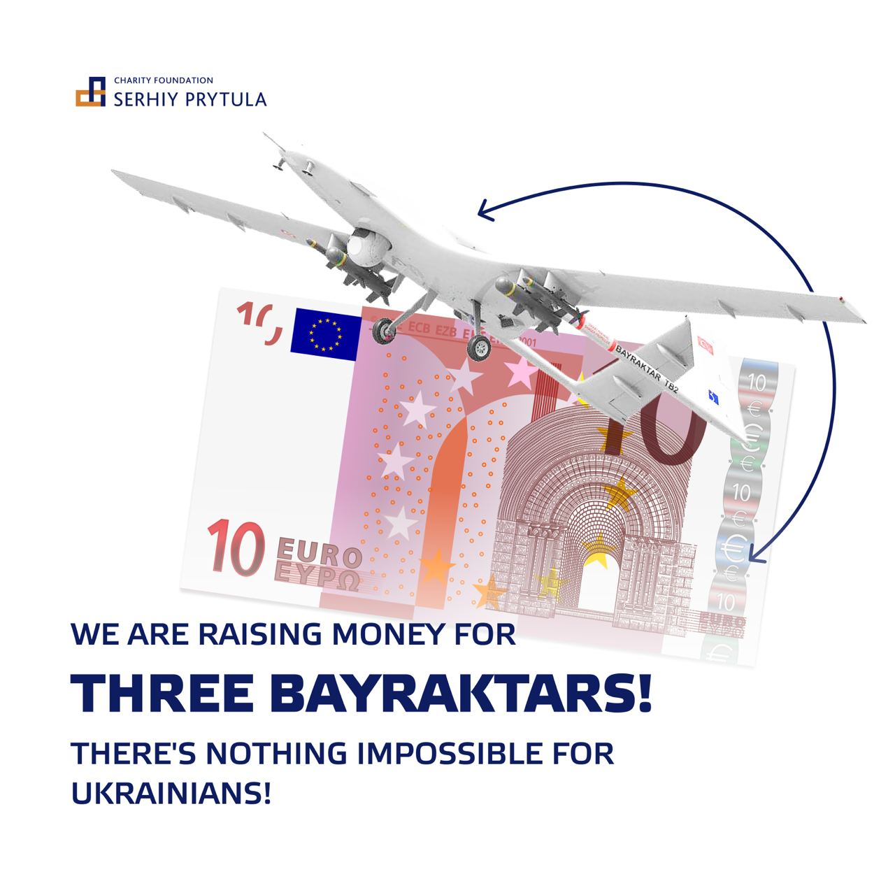

Dear friends of Ukraine from around the world!
 Join usJoin us to buy 3 “Bayraktar” drones for Ukrainian Air Force!
Serhiy Prytula Charity Foundation is raising donations for 3 UAV fighters "Bayraktar" to help UAF to protect our freedom.
We need $15 million!
It's the biggest fundraising campaign for Ukraine ever, and every Dollar, Euro, Pound or Crypto coin matters in our fight for democracy and freedom!